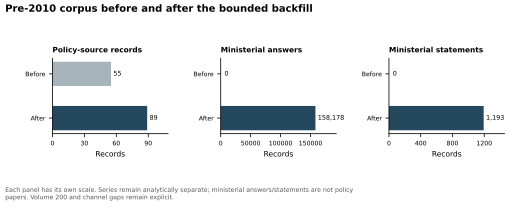
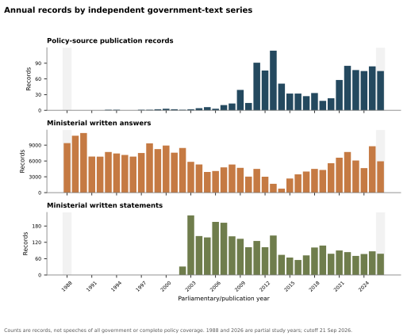
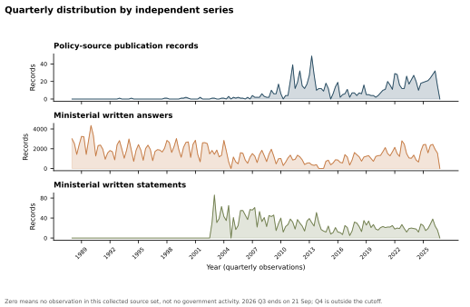

Historical UK government acquisition
Policy-source publication records1,054
Ministerial written answers235,420
Ministerial written statements2,705
Pre-2010 change

Source progress
| Source | Series | Enumerated target | Already in 06 | Net-new target | Original acquired | Parsed | Formally committed | Failed target records | Failed/retry objects | Unprocessed records | Unprocessed content objects |
|---|---|---|---|---|---|---|---|---|---|---|---|
| GOV.UK historical policy | policy_document | 35 | 1 | 34 | 34 | 34 | 34 | 0 | 4 | 0 | 0 |
| Historic Hansard bulk XML | answers + statements | 135761 | 0 | 135761 | 135761 | 135761 | 135761 | 0 | 1 | 0 | 0 |
| Hansard API 2005–2010 | answers + statements | 24833 | 0 | 24833 | 24748 | 24748 | 24748 | 85 | 92 | 0 | 0 |
| Commons archive/API 2010–2014 gap backfill | answers + statements | 11628 | 0 | 11628 | 11628 | 11628 | 11628 | 0 | 247 | 0 | 212 |
| Questions/Statements API 2014–2026 | answers + statements | 65988 | 0 | 65988 | 65988 | 65988 | 65988 | 0 | 0 | 0 | 0 |
Time distribution


Boundary
The three series remain separate. Zero observations are not evidence of zero government activity. 1988 and 2026 are partial study years. The interval 2010-05-01 through 2014-09-11 remains a documented partial channel gap: 618/638 dated indexes were verified, 626/1063 frozen answer pages were acquired, 225 page requests failed and 212 pages were left unrequested after the dynamic throttle stop. Missing observations are not interpreted as zero speech. DTI/BERR/BEIS contain broader business material.
Full methods, residual issues, denominator notes and acceptance checks: Markdown report, integrity JSON, progress CSV, exceptions CSV.